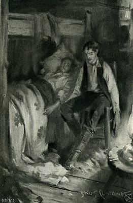

Blank Verse poetry has no fixed number of lines. It has a conventional meter that is used for verse drama and long narrative poems. It is often used in descriptive and reflective poems and dramatic monologues. Blank verse is poetry written with a precise meter—almost always iambic pentameter that does not rhyme. Blank verse is poetry written with a precise meter.
Here is an excerpt of Mending Walls
written by Robert Frost:
Something there is that doesn’t love a wall. That sends the frozen-ground-swell under it, And spills the upper boulders in the sun;
Here is an excerpt of Hamlet
written by Shakespeare:
But, woe is me, you are so sick of late, So far from cheer and from your former state, That I distrust you. Yet, though I distrust, Discomfort you, my lord, it nothing must.